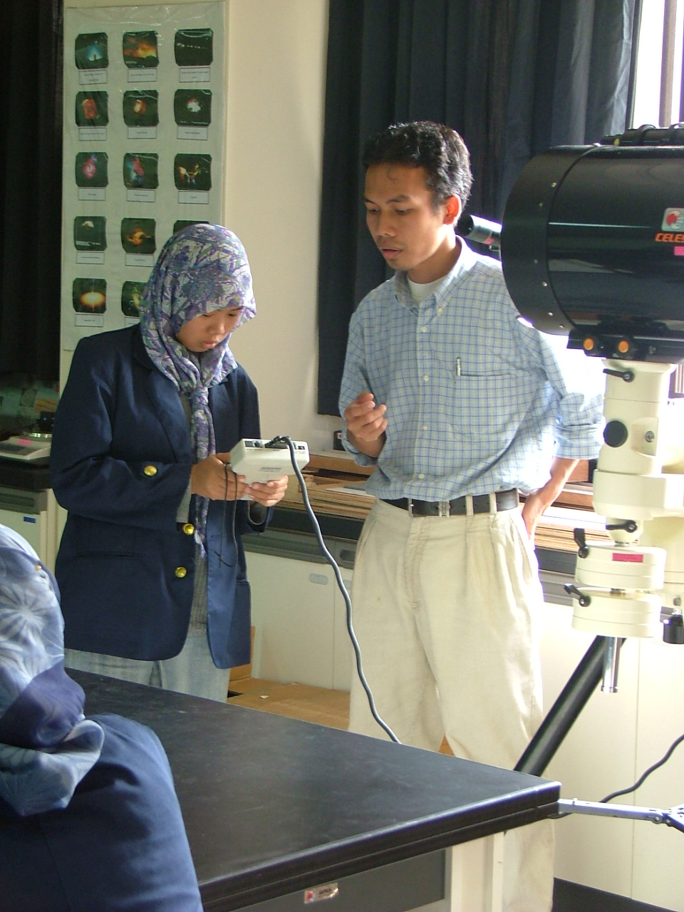
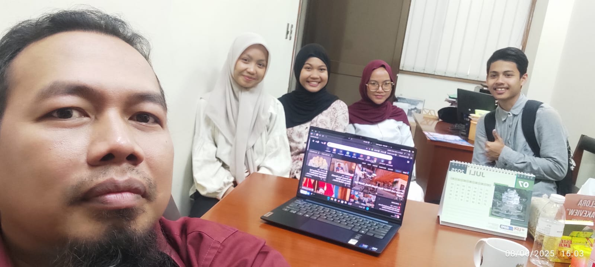

I’m a geoscientist and educator with a deep focus on near-surface and environmental geophysics. I investigate subsurface structures and dynamic earth processes across Indonesia to solve critical environmental challenges and mitigate geological hazards. With a strong background in geoelectrical exploration, gravity methods, and magnetic field analysis, my work bridges the gap between field-based observations and computational physics.
Currently, I am a faculty member and researcher in the Physics Program at Universitas Pendidikan Indonesia (UPI), where I combine teaching, tool reconstruction, and advanced data processing to train the next generation of scientists. Beyond research, I am actively engaged in the academic ecosystem as the Managing Editor for Wahana Fisika, advocating for rigorous and accessible scientific publishing.
I come in three main flavours
Reflecting the core distinct areas of my academic and scientific workflow
Field Mode

Lab Mode

Class Mode
Focus Areas
Research Interests
Geological Hazards & Landslides
Identifying structural sliding zones and mapping high-risk areas using geoelectrical resistivity layouts and Fault Fracture Density (FFD) models.
Subsurface & Structural Imaging
Delineating complex underground features such as graben structures, volcanic areas, fault systems, and hidden subterranean cavities using gravity and magnetic susceptibility.
Environmental Geophysics
Mapping groundwater contamination pathways near municipal landfills by combining chemical-geochemical datasets with 2D electrical resistivity tomography.
Atmospheric & Applied Physics
Exploring the intersection of atmospheric variables during solar eclipses and optimizing IMRAD-based writing competencies for STEM teachers.
Integrated Remote Sensing & Geophysics
Exploring the intersection of remote sensing systems, structural geospatial factor analysis, and deep-ground geophysical profiling to achieve highly accurate terrain models.
Organized Seminars
IPC-SINAFI is an annual scientific event organized by the Physics and Physics Education Study Programs of Universitas Pendidikan Indonesia (UPI). It serves as an active open forum for academics, researchers, educators, and students to disseminate progress and debate recent developments in the discipline.
The International Physics Conference (IPC) series debuted in 2024 in conjunction with the 10th Seminar Nasional Fisika (Sinafi), continuing collaboratively alongside the Indonesian Physics Society (PSI) West Java region.
A peer-reviewed journal offering a venue to publish rigorous research regarding foundational physics principles and practical applied physics. Published biannually (June and December) by the Physics Study Program, Universitas Pendidikan Indonesia in collaboration with Perkumpulan Pendidik IPA Indonesia (PPII).
Achmad, A. R., Asmoro, C. P., Ardi, N. D., Ramayanti, S., Park, S., Lee, K. J., … Lee, C. W. (2026). Land subsidence through ICOPS time-series coupled with metaheuristic optimized CNN-based susceptibility mapping: a case study in Bandung, Indonesia. Geomatics, Natural Hazards and Risk, 17(1).
Ardi, N. D., et al. (2026). Prediction of Flood Susceptibility in West Java, Indonesia Based on Geospatial Factor Analysis and Machine Learning Models. Korean Journal of Remote Sensing.
Iryanti, M., Ardi, N. D., & Team. (2026). Landslide susceptibility mapping based on K-Means and Self-Organizing Map clustering with Geographic Information System in Tasikmalaya, West Java. Journal of Degraded and Mining Lands Management.
Fratiwi, N. J., Arifiyanti, F., Samsudin, A., Ardi, N. D., & Suhandi, A. (2025). Strengthening research writing competencies in physics and biology teachers: A practical imrad-based guide. Bubungan Tinggi: Jurnal Pengabdian Masyarakat.
Kurniawan, R., Ardi, N. D., & Hidayat, H. (2019). Analisis Penampang Resistivitas 2D Metode Magnetotellurik dan Audio-magnetotellurik untuk Mengetahui Sistem Petroleum pada Cekungan Singkawang. Wahana Fisika.
Ardi, N. D., Iryanti, M., Agustine, E., Asmoro, C. P., Yusuf, A., Sundana, A. N. A., ... & Sumarni. (2019). Monitoring of rainfall infiltration to under surface using DC resistivity method. Journal of Physics: Conference Series, 1280(2).
Safura, H. Y., Djaja, A. W., Ardi, N. D., & Wijaya, P. H. (2019). Application of Kirchhoff prestack time migration method of the 2D marine seismic data for mapping the subsurface structures in dip case Southern Aru, West Papua, Indonesia. Journal of Physics: Conference Series, 1280(2).
Ardi, N. D., Iryanti, M., Asmoro, C. P., Yusuf, A., Sundana, A. N. A., Safura, H. Y., ... & Sumarni. (2018). Geoelectric imaging for saline water intrusion in Geopark zone of Ciletuh Bay, Indonesia. Journal of Physics: Conference Series, 1013(1).
Ardi, N. D., Iryanti, M., Asmoro, C. P., Nurhayati, N., & Agustine, E. (2018). Mapping landslide potential area using fault fracture density analysis on unmanned aerial vehicle (UAV) image. IOP Conference Series: Earth and Environmental Science, 145(1).
Ferahenki, A. R., Ardi, N. D., Heditama, D. M., & Muttaqin, Y. A. (2018). Aplikasi pemograman inversi 2D menggunakan Matlab® pada data resistivity. Proceedings of the Universitas Negeri Surabaya Physics Seminar (Vol. 2).